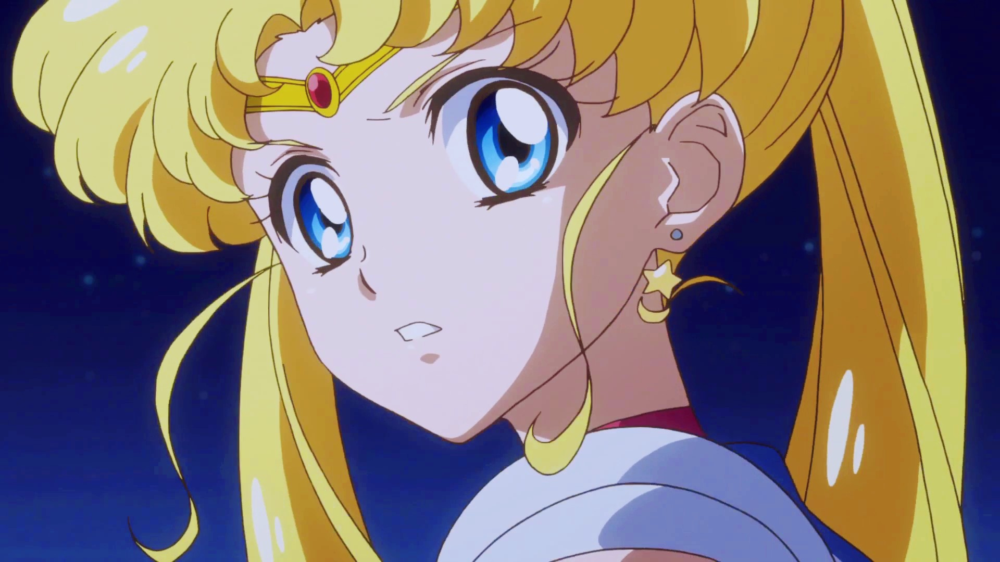
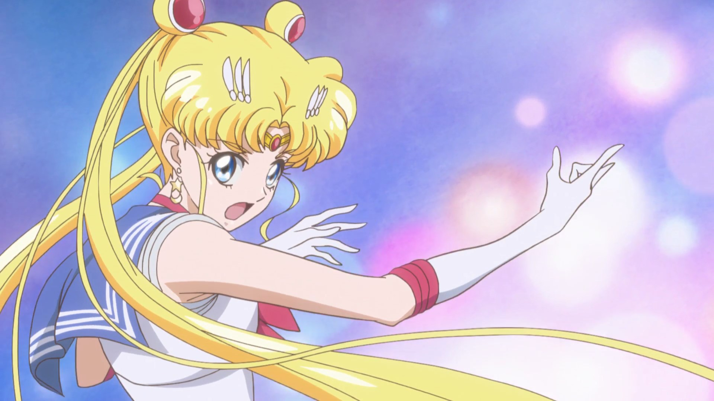
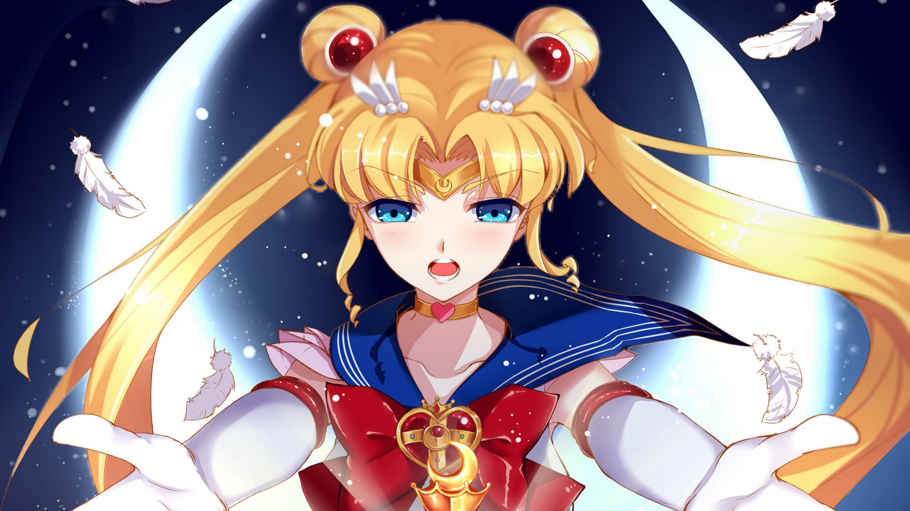
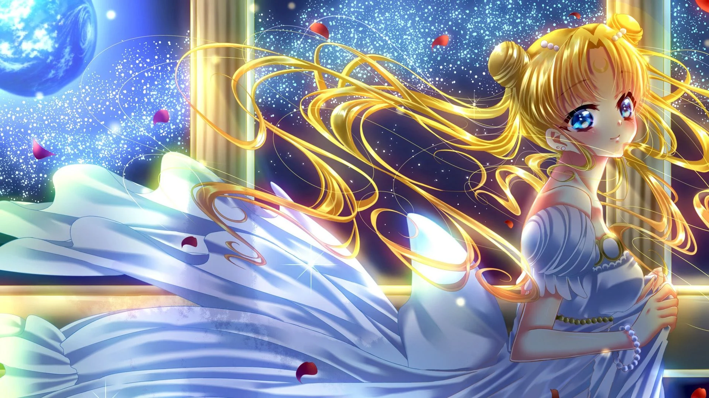
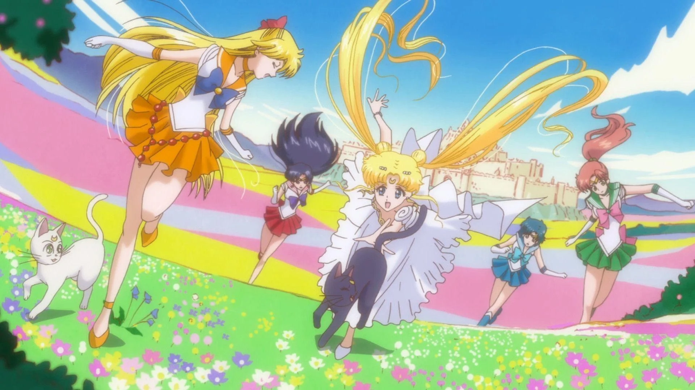
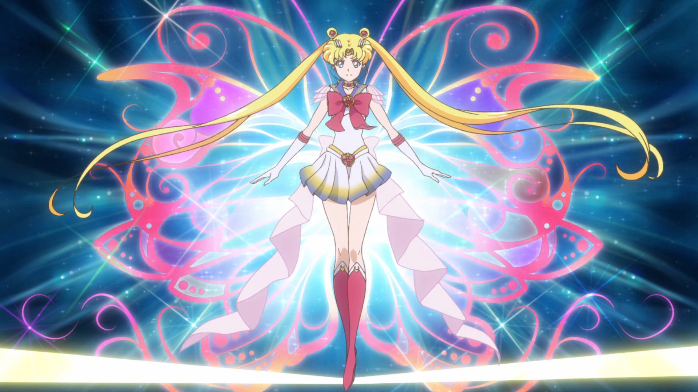

Sailor Moon conta a história de Usagi Tsukino, uma garota normal e inocente de 14 anos — pelo menos, é isso que ela pensa — que um dia encontra Luna, uma gata falante que revela a identidade de Usagi como "Sailor Moon", uma guerreira mágica destinada a salvar a Terra das forças do mal.